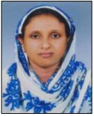
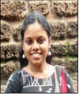

Dr Suneera T P
Dr Suneera T P
Assistant Professor and Head
Joined the dept. in 2007.
Teaching experience : 12 years
MSc from Cochin University of Science and Technology.
PhD from University of Calicut.
Research areas are Nonlinear Dynamics, Solitons.
Publications : 5

Harikrishnan G
Assistant Professor
Joined the dept. in 2007
Teaching experience : 19 years
MSc from University of Calicut. PhD from NITK-Surathkal.
Research area is Computational Materials Science.
Publications : 6

Mr Hameed M
Associate Professor
Joined the dept. in 2007
Teaching experience : 23 years
Alumnus of this dept. in 1991 BSc batch.
MSc from St. Thomas College, Thrissur.

Dr Nithyaja B
Assistant Professor
Joined the dept. in 2013. A research guide of the dept.
Teaching experience : 8 years
Alumna of this dept. in 2000 BSc batch.
MSc from IIT-Madras. MTech and PhD from Cochin University of
Science and Technology
Research area is Biophotonics.
Publications : 17
Ms Preetha A U
Assistant Professor
Joined the dept. in 2015
Teaching experience : 4 years
MSc from University of Calicut.
Research area is Astrophysics.
Publications : 7

Ms Reena V N